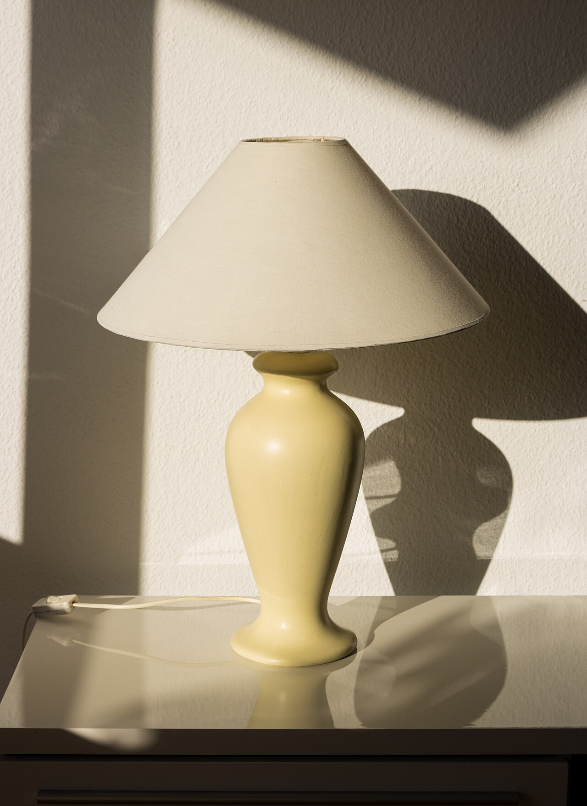

Light across eight stops
At ISO 100 the scale spans eight stops between a dim interior and direct sun. Each two-stop interval admits four times as much light.
- EV 7Dim interior
- EV 9Window light
- EV 11Deep shade
- EV 13Overcast
- EV 15Direct sun
Stillmeter S1 measures the light falling on your subject. One dial gives you the aperture and shutter speed.
See the meterS1 · €89 including case and strap
The diffuser faces the light. The dial pairs a usable shutter speed with your chosen aperture.
At ISO 100, each pair admits the same amount of light. Choose the depth of field or motion blur you want.
| Aperture | Shutter | Use |
|---|---|---|
| f/4 | 1/250 s | Moving subject |
| f/5.6 | 1/125 s | Handheld portrait |
| f/8 | 1/60 s | Still subject |
| f/11 | 1/30 s | Tripod |
Incident readings measure the light falling on a subject. A reflected reading follows the surface you point at.


Three moves take you from incoming light to a camera setting.
Hold the white diffuser at the subject, facing the camera.
Press once. The meter holds the exposure value while you move.
Turn the dial to pair your aperture with a shutter speed.
At ISO 100 the scale spans eight stops between a dim interior and direct sun. Each two-stop interval admits four times as much light.
Everything supplied with the S1, with sizes for the parts you may want to replace.
The case is 84 mm long and 19 mm deep. A wrist loop keeps it within reach while you set the camera.
19 mm deep · battery installed
The meter, slip case and wrist strap cost €89 together. Send an enquiry for the next batch.
Email an order enquiry